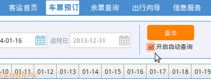
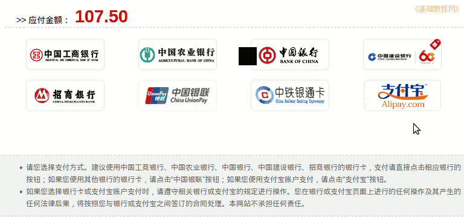

火车购票乘坐指南
作者：TeliuTe 来源：基础教程网
一、网上购买火车票 返回目录 下一课购买火车票一般要提前去火车站或网上购票；
0、查询起售时间
1）在车站买票可以提前18天，网上购票可以提前20天，具体变动请访问铁路12306官网，点击“客运服务－起售时间查询”：http://www.12306.cn/mormhweb/kyfw/
2）或者在预订车票查询框中，查询一下20天以后的车票信息，也会显示具体起售时间；
1、网上购票
1）网上购票访问铁路订票官网，打开网址：http://www.12306.cn，如果没有安装证书，在中间点击下载根证书，双击打开“scra.cer”，按提示导入证书、完成；
2）再点击左侧栏中的第二个“购票/预约”链接，进入车票预订页面，点右上边的“登录”链接，进入用户登录页面；

3）如果已经有用户，在左边输入用户名、密码、验证码，点击“登录”按钮，注意用户名区分大小写，新用户点下边的“快速注册”按钮，详细请参阅：http://teliute.org/mix/TeTrain/jichu1/jichu1.html；
4）在左边的查询框里，依次选择出发地、目的地、出发日期，可以输入拼音选择，或者按字母顺序选择
5）点击“查询”按钮，出来查询结果，依次显示出发地、日期、车票信息，满意可以点右下角的“预订”按钮；
6）春运高峰期买票，可以自动刷票抢票，先查询一次出来车票信息，然后打勾右边查询按钮下边的“开启自动查询”；

7）接着点它下边的“更多选项”按钮；
8）从上到下依次选择车次类型、发车时间、出发车站、到达车站乘车人等；
9）下边的优先车次，输完要点右边的加号，添加进去，优先席别选择硬卧，备选日期不要，打勾“自动提交”，点击一下“试听提示音乐”，再停止音乐；
10）原则是精确度越高越好，这样查询结果就快，检查无误后，等开始售票前5分钟内，点击右上边“查询”按钮，即可开始自动订票；
11）当查询到有票时，会弹出确定对话框，同时提示音也响起，这时候一定要快速准确输入验证码后，自动完成订单；
12）然后显示正在处理，完成后进入支付页面；
13）如果提示失败，则需要重新订票，可以提前开上两个标签，都选择好车票信息，失败后迅速切换到下一个标签点“查询”，也可以开上多个浏览器，如IE、火狐、Opera等；
2、个人中心预订、支付订单、查看订单等
4）点击上边的用户名，可以登录到个人中心“我的12306”页面中；

5）要购买车票可以点中间红色的“车票预订”，或者也可以点上边导航栏的第一个“车票预订”链接；
6）点击出发地文本框，查找自己的出发地和到达站目的地，也可以输入拼音或(单个)汉字查找，选择好日期时间点右边的“查询”按钮；
7）在下边出来查询结果，可以查看车票的剩余情况，“有”是较多、“无”是售完、“--”是无此类，
“硬卧”就是一般的卧铺票、“硬座”就是一般的座位票，“无座”就是站票；
8）找到自己需要的车票后，点击右侧的“预订”按钮进入购票人信息页面，
上面是车次、日期、时间，核对一下是否正确，下面是可购买的车票种类以及票价，
中间是常用联系人，这里的人可以直接选中添加到下面的购票人列表中，可以提前在个人中心里添加常用联系人，详细请参阅：http://teliute.org/mix/TeTrain/jichu2/jichu2.html
下面可以输入常用联系人里没有的其他购票人，一次最多可以买5个人的票，再多的要再重复到下一张订单买；
9）选择好购票人，选择购票种类(席别)，检查无误点击下边的“提交订单”按钮，
购多个人票可多选常用联系人，或点右下角的“添加1位乘车人”继续填写，添加错误的人点左边的“删除”；
10）在出来的确认页面中会显示车次、席别、姓名、身份证号，检查无误后点“确定”；
11）点击确定后，出来车票的信息，除了车次日期等，还有了车厢座位号上铺下铺等，检查符合自己要求，就点“网上支付”按钮，要在45分钟内完成付款；
如果发现不符合要求，可以点“取消订单”，每天只有三次订单机会，用完了就得用别人的号或者等到明天再买了；
12）点“网上支付”按钮后，进入选择银行页面，支付只支持网银付款，提前准备好K宝等网银证书；

13）点击选择一个银行，进入网银付款页面，插入K宝等网银证书，点击“下一步”按提示操作即可；
14）付款成功后，会提示尽快到车站取票，同时在手机和邮箱中都会收到订单号和车票信息，也可以点击右上角自己的用户名，在个人中心“我的12306”点击左侧“订单查询”查询；

15）购票成功后，可以到就近的火车站、代售点，凭身份证换取纸质车票，代售点要收取5元手续费，
如果有自助取票点可以更方便取票，在触摸屏上选择取票，将身份证放在右边指定区域，稍等下边抽屉中就会出一张票；
16）车票上包含有车次、车厢、座号、上下铺等信息，双层车厢还会有上、下层信息；
2、车站购买火车票
1）在车站买票可以提前18天，网上购票可以提前20天，具体变动请访问铁路12306官网，点击“客运服务－起售时间查询”：http://www.12306.cn/mormhweb/kyfw/
2）在查询框中点击按字母顺序查找自己的车站名称，也可以输入拼音或单字，词组可能显示不出来，然后点击“查询”按钮，查看售票开始时间；
3）查询后提前去排队买票，记得带上身份证和钱，计划好买单程还是同时把返回的票也买上；

4）还要注意有些代购车站的下班时间，注意窗口上的售票时间，有多个售票窗口的注意看清哪些是普通旅客，哪些是学生票窗口；
本节学习了车站、网上购买火车票的基础知识，如果你成功地完成了练习，请继续学习下一课内容；
本教程由86团学校TeliuTe制作|著作权所有
基础教程网：http://teliute.org/
美丽的校园……
转载和引用本站内容，请保留作者和本站链接。